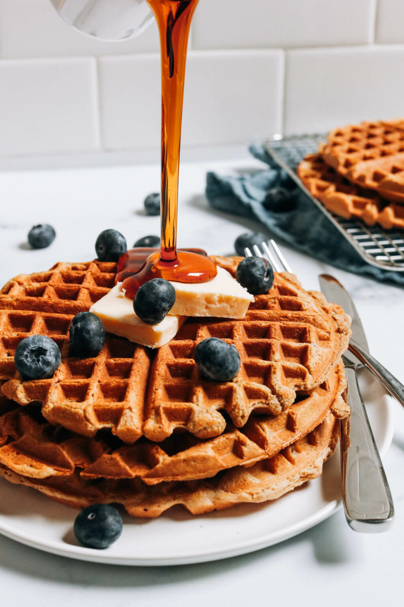

Vegan Protein Waffle Recipe

Description
It’s HAPPENING: vegan, gluten-free PROTEIN waffles that are light, FLUFFY, seriously crispy, and have 17+ grams of protein per waffle!
Perfectly sweet, wholesome, and just 1 bowl, 5 ingredients, and 15 minutes required! The hardest part is waiting for your waffle iron to cook them. Let’s make waffles!
Ingredients
- 1 cup dairy-free milk
- 2 tsp vanilla extract
- 2 tsp avocado oil (or sub melted vegan butter or another neutral oil)
- 1 ¼ cup Minimalist Baker Pancake + Waffle Mix (product no longer available – see notes for DIY option!)
- 1/4 cup plain or vanilla protein powder (we like Sprout Living Vanilla or Original // or pea/brown rice protein)
Steps
- To a medium mixing bowl, add the dairy-free milk, vanilla extract, and oil or melted vegan butter. Whisk well to combine.
- Next add the Minimalist Baker Pancake + Waffle Mix (see notes for DIY version!) and protein powder of choice. Whisk again until there are no lumps remaining.
- Preheat your waffle iron and cook the waffles according to the manufacturer’s instructions.
- Serve warm with desired toppings, such as vegan butter, maple syrup, peanut butter, or fruit. We like a combination of bananas, maple syrup, and peanut butter!
- Store leftovers in the refrigerator for up to 3-4 days or in the freezer for up to 1 month. Waffles reheat well under a low-medium broil or in the toaster until hot and crispy.